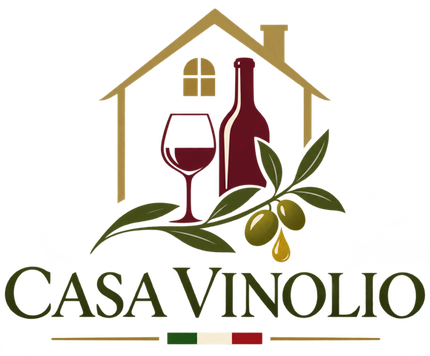
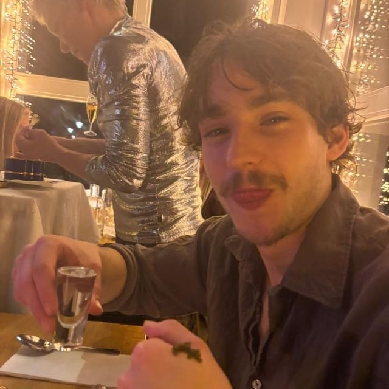

01 / OLIO
Olijfolie
Voor bij vers brood, over een salade of om dagelijks mee te koken.

Welkom bij CASA VINOLIO
Op onze website vind je ook Italiaanse wijn. Daarom vragen we eerst naar je leeftijd.
Deze website is uitsluitend bestemd voor bezoekers van 18 jaar en ouder.
Italiaanse smaken op Texel
Wijn, olijfolie en delicatessen. Voor wie graag iets goeds op tafel zet.
Het assortiment
Geen eindeloze catalogus. Een selectie Italiaanse smaken waar je Juup gewoon naar kunt vragen.
Voor bij vers brood, over een salade of om dagelijks mee te koken.
Een fles voor bij het eten of voor een avond die nog even duurt.
Voor de borrel, een diner of zomaar iets lekkers tussendoor.
Producten en prijzen zijn afhankelijk van de actuele beschikbaarheid. Je vraagt vrijblijvend het aanbod op.
Iets specifieks in gedachten?
Aangenaam
Met CASA VINOLIO wil ik mooie Italiaanse producten op een eenvoudige manier bij mensen op tafel brengen.
Niet met een ingewikkelde webshop, maar met een goed aanbod en direct contact. Zoek je iets voor een borrel, een diner of een cadeau? Stuur me gerust een bericht.
Neem contact opLa dolce vita
Soms begint een goede avond heel eenvoudig. Met een glas wijn, iets lekkers en alle tijd.
Zo werkt bestellenZo werkt het
Geen winkelmandje of automatische betaling. Je stemt je bestelling persoonlijk af met Juup.
Bekijk de productgroepen en zet op je wensenlijst wat je aanspreekt.
Deel je wensen via WhatsApp of mail en stel gerust je vragen.
Juup laat weten wat beschikbaar is, wat het kost en hoe je het kunt ontvangen.
Contact
App of mail Juup. Dan hoor je persoonlijk wat er mogelijk is.
WhatsApp 06 8267 0111 ↗E-mail juupbiesboer@gmail.com ↗Vul hieronder in wat je zoekt. We zetten je bericht klaar in WhatsApp; je verstuurt het zelf.
Er worden geen gegevens opgeslagen via dit formulier.
Veelgestelde vragen
Nog niet. Je geeft je wensen door en stemt het aanbod, de prijs en betaling af met Juup.
Vraag Juup naar de mogelijkheden voor een cadeau of een samengesteld pakket.
Wijn is uitsluitend voor personen van 18 jaar en ouder. Bij aankoop en aflevering gelden de wettelijke leeftijdscontroleverplichtingen.